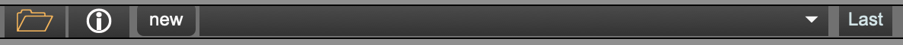

MIDI Window


You can record MIDI input into Djazz, and then inmprovise on the recorded input using all the effects and the improviser. Live MIDI input, like live audio input, is recorded only when a chapter or a song is looped . Each time a chapter (or the song) is looped, a new oval representing this repeition will light up in the bar next to the record button. From the two tracks below the record track, you can choose any oval beneath an illuminated oval to play. This will play the corresponding recorded repetition.
When clicked and illuminated, the record button arms the buffer for recording. It does not start recording until the first beat that advances the grid.
Save the current a MIDI live session. These sessions are saved as folders (see [saving and loading files]({{ .Page.Dir }})) containing - a MIDI file - a JSON file containing beat, note, label, and repetition metadata, so that this can be reloaded into a Live Input session. This is not the same format as score files, and will not load into the [score file loader].
Each oval in the track represents a repetition of the current looped section. When recording, each time the end of the section is reached, a new oval will illuminate.
This selects the maximum number of repetitions that can be recorded. The default is 16.
There are two MIDI live input tracks. They use MIDI outs are 1 and 2. Ovals can be selected to be played if the corresponding input oval is illuminated.


MIDI scores are made up of multiple MIDI tracks. They are saved in a special format. When a score is loaded, the corresponding MIDI tracks will load.
Djazz uses two scores. They correspond to the following tracks:
Effect controls in each score bar will change all the effects in the tracks belonging to the score.

Scores can be loaded by dragging a score onto the button with an icon of a folder. If a song folder is loaded that contains scores in its new and new2 subdirectories, these scores will be available in the dropdown menus. Choosing a score from the menu will load it.

The MIDI out bank contains 15 tracks output controls.
1-2: Live Output
3-15: Tracks/Score output
Changes the volume of the MIDI track. If you click just above the dial, the dial will reset to its default value of 80.
If not illuminated, the MIDI track will not be audible, and its volume in the volume meter will be gray. When illuminated, the MIDI track will be audible.
When illuminated, this will “solo” the MIDI track. If a single track is soloed, it is the only track that you will hear. If several MIDI tracks are soloed, only these tracks will be audible. If no tracks are soloed, all the tracks will be audible.
Shows the level of the MIDI output. When a track is inactive, this will be grey. When active, the output will be green, orange, and red, depending on the volume level.
Allows the user to change the MIDI channel of track. Options are 1 through 16.
Allows the user to select the output port of the MIDI track. These are usually Max’s internal MIDI playback (which will be called something like “DAC synth”), and outputs to other applications (called “from Max 1” and “from Max 2”).
This changes the output port of all the MIDI channels.

See effects .
Selecting either the folder button or the information (i) button will open the view to either load a track, or see the current playback data of the track.

You can load a track that does not follow the chord progression in the song file. If the track contains chords that are used in the song file, though, the improviser will use this chord information to create a harmonically correct solo!

This displays the current beat, the current tempo, and the current transposition that the improviser has found
, if this setting is on.